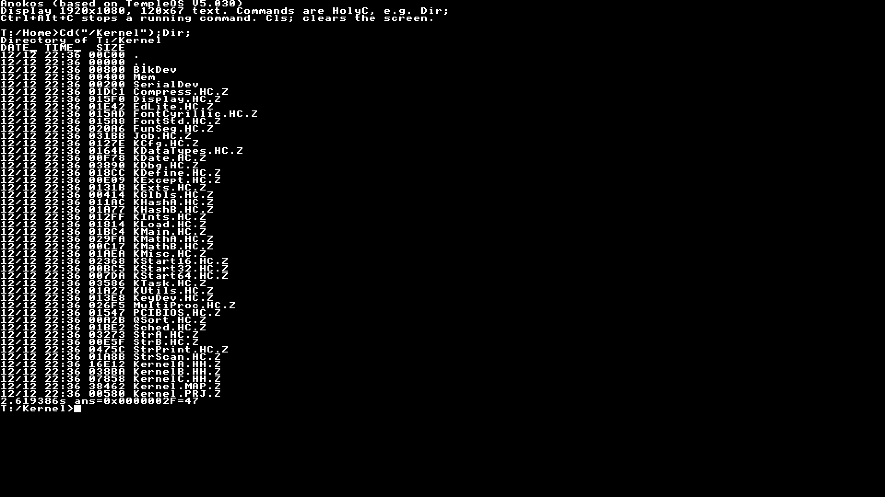

A simple, open operating system, built in public.
Anokos is a community-developed operating system descended from TempleOS. It boots straight into a full-screen terminal at your display's native resolution, and every line of it is open to read, change and improve.

What is Anokos?
Anokos starts from TempleOS, the public-domain operating system written by Terry A. Davis, and develops it into a system anyone can use and contribute to. Its kernel, compiler and tools are written in TerryC, its own language named in honor of Terry A. Davis, and compiled by the system itself.
Terminal first
No desktop to get in the way. Anokos boots directly into a clean, full-screen terminal with white text on black.
Native resolution
The kernel reads your monitor's preferred resolution and uses it, instead of the fixed 640x480 of its ancestor.
One language, all the way down
The command line, the kernel and the applications share one language. Type a statement and it is compiled and run immediately.
Open and reproducible
Licensed under GPL-2.0. The host tools rebuild the kernel and a bootable ISO from source with one command.
Roadmap
Milestones are worked on in this order, because each one builds on the ones before it. The full plan is in ROADMAP.md.
- 00Done
Bootable terminal
Boot to a full-screen terminal at native resolution, with a reproducible build.
- 01Done
TerryC
The system language is renamed TerryC, with .TC and .TH source files.
- 02Planned
PCI and PCI Express
Full hardware discovery and a driver model for modern devices.
- 03Planned
Ring 3
Run applications in user mode, so a faulty program cannot bring down the system.
- 04Planned
GPU and graphics
Real graphics drivers and a modern graphics library.
- 05Planned
Multi-architecture
ARM64 for Raspberry Pi and ppc64 for Power Mac G5, alongside x86-64.
Explore the code as a city
The Code City lays out the entire source tree as a map: every folder is a block and every file is a building covered in its own code. Zoom in until you can read every line, tilt it into 3D, search for any symbol, and follow arcs to everything a function calls and uses. A graph view of all 7,900 symbols is also available.
Get started
Build Anokos from source and boot it in a virtual machine. You need Python 3 and VirtualBox.
Clone the repository.
git clone https://github.com/LandonDevAnokos/Anokos.git cd Anokos
Build the kernel and a bootable ISO.
python tools/anokos_build.py all
Boot it in a virtual machine, or write build/Anokos.ISO to a disc or USB drive for a real PC.
python tools/anokos_build.py run
Anokos needs an x86-64 PC or virtual machine with legacy BIOS boot, an IDE/ATAPI CD drive and at least 512 MB of memory.
Contribute
Anokos welcomes contributions of every size, from fixing a typo to porting the kernel. Read the contributing guide, pick something from the roadmap, and open a pull request.